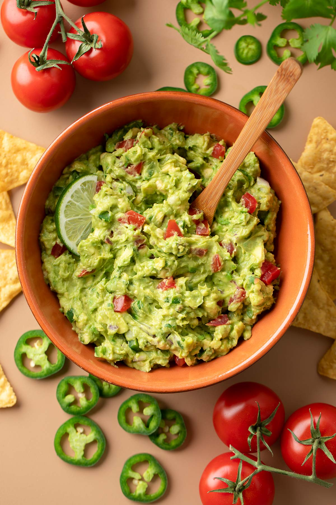

Chunky Guacamole

Description
If you love eating avocados and tortilla chips, then this chunky guacamole recipe will serve as a great appetizer or snack. This fresh and healthy dip can easily have you go through an entire bag of tortilla chips; carb watchers beware. You can adjust the chunkiness to your preference by varying the amounts of chopped ingredients.
Ingredients
- 3 medium size avocados
- 2 roma tomatoes
- 1 jalapeño pepper
- 1⁄2 cup finely diced red onion
- 1⁄4 cup chopped fresh cilantro
- 1 small lime
- 1 tsp garlic powder
- 1⁄2 tsp onion powder
- Salt and pepper to taste
Recipe
- Slice each avocado in half, remove the pit, and use a spoon to scoop out the avocado from the peel.
- Add avocado to a medium bowl and fork mash until desired consistency is reached (more mashing will make it smoother).
- Next dice tomatoes and finely dice red onion. For the jalapeño, remove the stem and slice in half. For a spicier guacamole, leave some of the seeds intact. For mild, use a spoon to scoop out the insides of each half of the pepper. Dice or finely mince the pepper depending on desired consistency.
- Add diced ingredients, 1⁄4 cup chopped fresh cilantro, and juice of one lime to the bowl along with seasoning.
- Mix and have a taste test using a tortilla chip. Add any additional salt, spices, and cilantro to your liking. It's that easy. Enjoy!